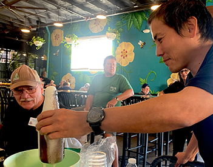

Believe in better beer?
Join your local homebrew club
You get to hang out with other brewers, share tips, recipes and beer!
Joe belongs to two clubs.
Yeastside Brewers
The Yeastside Brewers homebrewing club is a dynamic community of beer aficionados dedicated to the art of craft brewing in Los Angeles. Through monthly brewing competitions, educational workshops, and guest speaker events, members continually expand their knowledge and skills in brewing techniques and beer styles. The club fosters a sense of camaraderie among its members, who often gather for collaborative brewing sessions, brewery visits, and bottle shares. Additionally, the club prioritizes community involvement, organizing charity events, beer festivals, and outreach programs to support local causes and strengthen ties within the neighborhood. With a passion for experimentation and a commitment to excellence, the Yeastside Brewers embody the spirit of creativity, learning, and friendship in the world of homebrewing. Joe has been a member for 2012 and is currently serving on the board.
Brewing Borrachos
 The Brewing Borrachos are a San Diego based brewing club consisting of family and friends who are all certified Borrachos who share a deep passion for crafting and enjoying exceptional brews. Not the fizzy yellow light beers that only taste good with clamato, lime and Mexican glitter. We're talking the craft beer loving, high ABV and even higher IBU, don’t call me a hipster, West Coast Triple IPA loving kind. Their Palates and their Pansa’s are growing every day so you never know what they might have cooking on the brew stand. Joe has been a member since 2021 (or 1987 when he and founder Jason became college roommates).
The Brewing Borrachos are a San Diego based brewing club consisting of family and friends who are all certified Borrachos who share a deep passion for crafting and enjoying exceptional brews. Not the fizzy yellow light beers that only taste good with clamato, lime and Mexican glitter. We're talking the craft beer loving, high ABV and even higher IBU, don’t call me a hipster, West Coast Triple IPA loving kind. Their Palates and their Pansa’s are growing every day so you never know what they might have cooking on the brew stand. Joe has been a member since 2021 (or 1987 when he and founder Jason became college roommates).
Believe in better beer?
Become a certified beer judge
Judging helps you hone your palette, broaden your knowledge and you get to drink beer!
Every beer in competition is classified into one of 34 styles (with 109 sub-styles).
Beers are judged on how they match style and substyle according to five criteria:
Aroma, appearance, mouthfeel, flavor, and overall.
Styles of Beer
- Standard American Beer
- International Lager
- Czech Lager
- Pale Malty European Lager
- Pale Bitter European Beer
- Amber Malty European Lager
- Amber Bitter European Beer
- Dark European Lager
- Strong European Beer
- German Wheat Beer
- British Bitter
- Pale Commonwealth Beer
- Brown British Beer
- Scottish Ale
- Irish Beer
- Dark British Beer
- Strong British Ale
- Pale American Ale
- Amber and Brown American Beer
- American Porter and Stout
- IPA
- Strong American Ale
- European Sour Ale
- Belgian Ale
- Strong Belgian Ale
- Monastic Ale
- Historical Beer
- American Wild Ale
- Fruit Beer
- Spiced Beer
- Alternative Fermentables Beer
- Smoked Beer
- Wood Beer
- Specialty Beer
Judging Criteria
Aroma: describes malt and hop character, whether any alcohol or fruit esters are present, etc.
Appearance: describes color, clarity, and foam stand.
Flavor: aligns often with aroma, but adds bitterness, sweetness, sour character, etc.
Mouthfeel: describes body, carbonation, alcohol heat and other sensations.
Overall: describes the total balance and essence of a beer style
Believe in better beer?
Enter a competition
Local homebrew clubs hold competitions throughout the year. These contests provide occasions to try new styles and methods. The judges give every entry good notes and objective feedback. And you might win!
Here is a list of beer competitions in Southern California with links to the sponsoring clubs, key dates, and time of year.
Competition Name |
Sponsoring Club |
Entry Deadline | Competition Date |
|---|---|---|---|
| World Cup of Beer | Bay Area Mashers | February 28, 2024 | March 23, 2024 |
| Maltose Falcon's Mayfaire | Maltose Falcons | March 29, 2024 | April 13, 2024 |
| Queen of Beer Competition | Queen of Beer | April 14, 2024 | April 21, 2024 |
| Southern California Homebrewers Festival | California Homebrewers Assoc. | Saturday May 3, 2024 bragging rights only |
May 3-4, 2024 |
Believe in better beer?
Figure out what went wrong
Not every beermaking session goes to plan. Learning from the spectacular failures may not feel as good as winning a competition, but if you figure out where things went awry, you’ll become a better brewer.
Other common problems
Several factors can lead to a lack of head retention on your homebrewed beer. One place to start is examining your cleaning routine. Too much dish soap can reduce the head on an otherwise great beer. Look for different cleaning agents at your local homebrew store.
Explore if your beer is overcarbonated overall? If not it could be that it's too warm. If your beer has been stored over 60 degrees fahrenheit - try chilling before serving!
Unwanted haze in beer may be related to the type of yeast in your brew or too much yeast in your beer. Try chilling it to encourage the yeast to get out of suspension. If that doesn't work, next time try a different type or amount of yeast.
While often haze is considered a problem (see above) sometimes it's the goal. If your hazy IPA isn't looking hazy, try switching your hops. Galaxy hops have the best reputation for a stable haze. If those aren't readily available, try Simcoe, Columbus or Mosaic.
Believe in better beer?
Try a new recipe
When you’re ready to try some new beers, check out some of these recipes.
Click on the picture of the beer to get a close up look.
Click on the caption to go to a recipe.